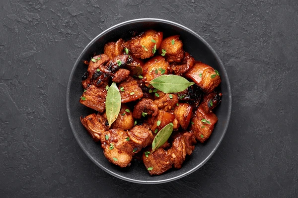

Section: 9-Rubidium
Name: Mendaro, Zirjan Hero F.
Date: August 27, 2025
My Favorite Recipe: Adobo
I love food, adobo is food, I love adobo so many kinds of adobo
Ingredients
- 1/2 cup soy sauce
- 1/2 cup vinegar
- 1 cup water
- 1 head garlic, minced
- 1 teaspoon whole peppercorns
- 2 bay leaves
- 2 lbs chicken, pork, or a combination of both
- 1 tablespoon cooking oil
- Salt and pepper to taste
Instructions
- In a large bowl, combine soy sauce, vinegar, water, minced garlic, whole peppercorns, and bay leaves. Mix well.
- Add the chicken and/or pork pieces to the marinade. Ensure all pieces are well coated. Cover and refrigerate for at least 1 hour, preferably overnight.
- Heat cooking oil in a large skillet or pot over medium heat.
- Remove the meat from the marinade, reserving the marinade for later use.
- Brown the meat in the hot oil until all sides are golden brown. This should take about 5-7 minutes.
- Once the meat is browned, pour the reserved marinade into the skillet. Bring to a boil.
- Reduce the heat to low, cover, and let it simmer for about 30-40 minutes or until the meat is tender and cooked through.
- Occasionally stir and baste the meat with the sauce to enhance the flavor.
- Once the meat is tender, remove the lid and let the sauce simmer uncovered for an additional 10-15 minutes to thicken it slightly.
- Season with salt and pepper to taste.
- Serve hot with steamed rice and enjoy your delicious adobo!
Picture of The Dish
